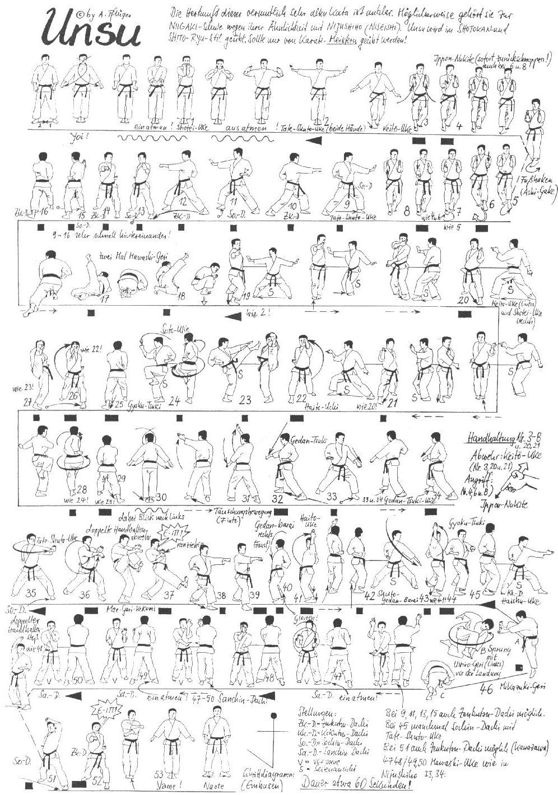

Unsu

- Yoi andando in Hachiji Dachi
- Avvicino la gamba destra e vado in Heisoku Dachi; contemporaneamente le braccia eseguono doppio Yoko Gedan Barai
- Tengo la posizione e dopo aver aperto entrambe le mani le richiamo frontalmente dal basso verso l’alto, portando i palmi verso l’alto e il dorso parallelo al terreno, i gomiti sono vicini
- Separo le mani eseguendo lentamente doppio Yoko Tate Shuto all’altezza delle spalle
- Avanzo in Migi Neko Ashi Dachi ed eseguo doppio Keito Uke seguito da Migi Gedan Ippon Nukite, che torna alla posizione di partenza; la mano sinistra resta ferma
- Tenendo ferme le braccia avanzo in Hidari Neko Ashi Dachi descrivendo con l’avampiede un semicerchio interno/esterno ed eseguo con la mano sinistra Gedan Ippon Nukite
- Ripeto nuovamente la sequenza precedente con la destra
- Spostando di 90° la gamba sinistra eseguo Shiho Tate Shuto Gyaku Tzuki
- Eseguo Uki Otoshi (Caduta fluttuante) atterrando sul fianco destro seguito da Hidari Mawashi Geri; le ginocchia sono richiamate frontalmente
- Eseguo una rotazione sull’asse del corpo spostandomi sul fianco sinistro ed eseguo Migi Mawashi Geri
- Portando il piede destro vicino al sinistro mi stacco da terra, e richiamando le mani aperte a ciotola come all’inizio vado in Kiba Dachi eseguendo doppio Yoko Tate Shuto all’altezza delle spalle
- Da Kiba Dachi eseguo Hiki Ayumi Ashi andando in Hidari Zenkutsu Dachi ed eseguo simultaneamente Hidari Keito Uke e Migi Ushiro Shuto Uke Gedan, entrambe in Ippon Nukite
- Hiki Ayumi Ashi andando in Migi Zenkutsu Dachi ed eseguo simultaneamente Migi Keito Uke e Hidari Ushiro Shuto Uke Gedan, entrambe in Ippon Nukite
- Eseguo in successione: Hidari Haito Uchi, Hidari Mae Geri, richiamando la gamba eseguo Mawatte Hidari Hiza Uke e Migi Soto Uke, riporto indietro la gamba sinistra scendendo in Migi Zenkutsu Dachi ed eseguo Gyaku Tzuki
- Mawatte e ripeto la sequenza precedente invertendo Hidari con Migi
- Richiamo la gamba destra e vado in Heisoku Dachi; contemporaneamente le braccia eseguono doppio Yoko Gedan Barai
- Avanzo lentamente in Hidari Zenkutsu Dachi ed eseguo Hidari Jodan Keito Uke
- Avanzo in Migi Zenkutsu Dachi ed eseguo Migi Jodan Keito Uke seguito da Migi Otoshi Tzuki Gedan
- Mawatte senza spostare i piedi ed eseguo Hidari Gedan Tzuki e immediatamente Mawatte senza spostare i piedi ed eseguo Migi Gedan Tzuki
- Sposto la gamba posteriore e vado in Hidari Zenkutsu Dachi con anca aperta ed eseguo Hidari Tate Shuto
- Chiudendo l’anca destra eseguo Migi Teisho Uke Chudan a contatto con il polso sinistro
- Carico il ginocchio tra le braccia tese ed eseguo Migi Kakato Geri richiamando le braccia al torace (Kiai!)
- Scendo in Migi Zenkutsu Dachi Ren Tzuki
- Spostando il piede dietro mi riporto sulla verticale in Migi Kiba Dachi ed eseguo Migi Yoko Gedan Barai seguito da Hidari Haito Uke
- Avanzo in Hidari Kiba Dachi eseguendo Hidari Yoko Gedan Barai seguito da Migi Haito Uke e Hidari Tzuki a 45°
- Sposto la gamba anteriore e vado in Hidari Zenkutsu Dachi anca aperta ed eseguo Hidari Haishu Uke
- Eseguo Migi Tobi Mikazuki Geri colpendo il palmo sinistro e scendendo; eseguo Migi Ushiro Geri, richiamo la gamba destra portandola avanti e atterro con il corpo parallelo al terreno e le mani a contatto con il terreno
- Mi rialzo in Hidari Sanchin Dachi ed eseguo Mawashi Tekubi Kake Uke sinistro basso e destro alto
- Sul posto Migi Teisho Jodan e Hidari Haito Gedan sinistro
- Avanzare in Migi Sanchin Dachi con Mawashi Tekubi Kake Uke destro basso e sinistro alto
- Sul posto Hidari Teisho Jodan e Migi Haito Gedan sinistro
- Ruotare sul piede destro (Mawatte) e andare in Fudo Dachi sinistro ed eseguire Age Uke Jodan sinistro
- Sul posto Zenkutsu Dachi sinistro Gyaku Tzuki Chudan destro (KIAI!)
- Avvicinando il piede sinistro: Heisoku Dachi
- Yame